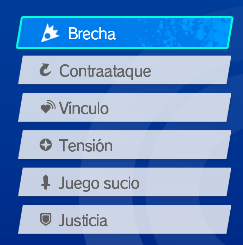
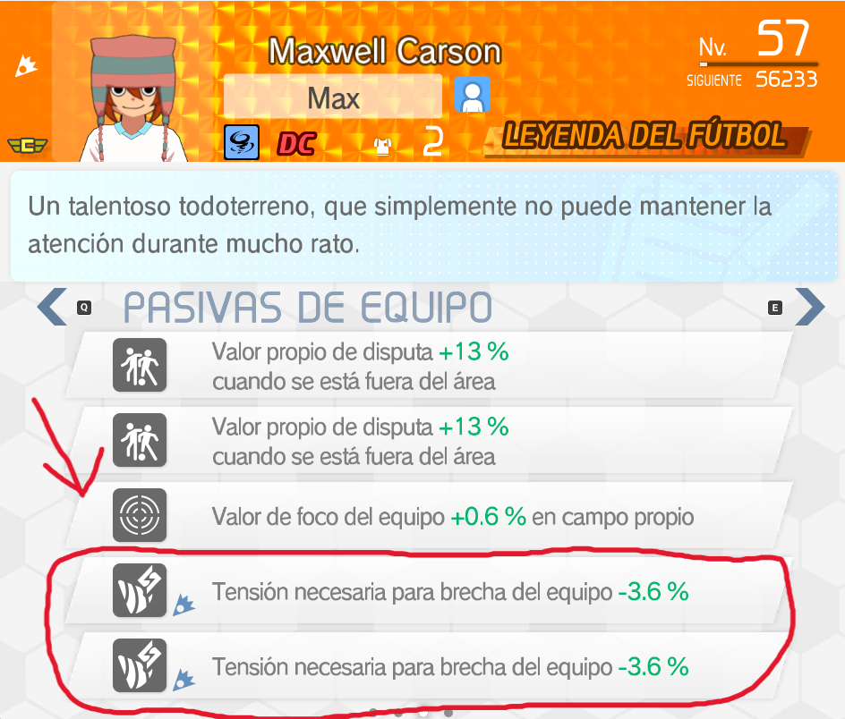
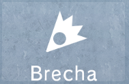
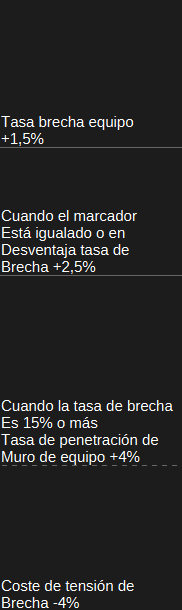
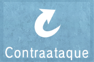
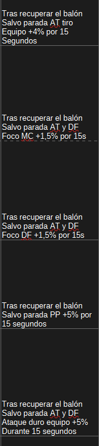
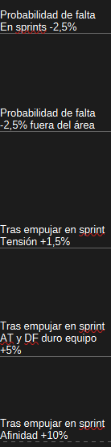
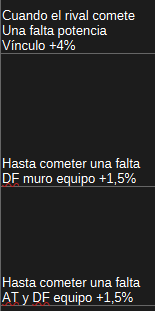

ARQUETIPOS
A la hora de crear un equipo, debes elegir uno o varios arquetipos para definir tu estilo de juego.
-1 Conceptos generales
Cuando obtienes a un jugador, este puede pertenecer a 6 posibles arquetipos:
-1 Brecha
-2 Contraataque
-3 Vínculo
-4 Tensión
-5 Juego sucio
-6 Justicia

Cada arquetipo destaca por mejorar ciertas características y tener su propio estilo de juego y ventajas. Por lo general querrás tener un arquetipo claro sobre el cual construir tu equipo para poder obtener los máximos beneficios de ello, pero considero que hay cierta flexibilidad en algunos casos, cosa que desarrollaré en el futuro. Cada jugador contará con 2 pasivas de arquetipo, mientras los entrenadores y gerentes pueden contar hasta con 5 gracias a la personalización de sus pasivas. Las pasivas de arquetipo tienen un límite de estadística lo que limita algunos aspectos de ciertos equipos.
Jugador

Gerente

-2 Brecha

El arquetipo de brecha es un arquetipo completamente basado en la ofensiva. Esto significa que el arquetipo se centra en poder tirar a puerta sin aportar otras mejoras a otros ámbitos del equipo.
Si nos fijamos en las pasivas de entrenador de este arquetipo podemos ver como estas pasivas buscan reforzar la posibilidad de brecha para rebasar al oponente, la capacidad de penetrar los muros para impactar y la retención de tensión para tener consistencia con el daño.(excel completo en el apartado pasivas)

Con el arquetipo de brecha lo que querrás hacer es conseguir algo de tensión y dedicarte a disparar a la portería hasta que se de la probabilidad de brecha, pero teniendo sumo cuidado porque otros aspectos del equipo estarán descuidados y la necesidad de tensión puede afectar mucho a tu juego frente a jugadores que no dependan de ello.
-3 Contraataque

El arquetipo de Contraataque es un arquetipo que parece general, pero por sus características termina siendo muy ofensivo en la mayoría de casos.
Si nos fijamos en las pasivas de entrenador vemos el por qué de esto, pero es su estilo de juego lo que hace entender el por qué de este enfoque.

Con el arquetipo de tensión lo que queremos es recuperar el balón sin parada por parte del portero para obtener mejoras temporales por 15 segundos. Si bien las pasivas permiten que los MC y DF puedan tener mejoras en el foco y hasta el portero reciba vida extra, no tiene tanto uso al ser un buff temporal de 15 segundos, su mayor uso termina siendo la mejora de tiro de hasta 100% por ese tiempo. En la mayoría de casos cuando el rival recupere el balón las mejoras de foco y portero no estarán presentes en la mayoría del equipo enemigo mientras que las mejoras de tiro por lo general siempre les podrás sacar partido, incluso si tienes que robar el balón con una segada y tirar sin técnica, sigue siendo muy rentable y fuerte. Creo firmemente que este equipo puede funcionar como híbrido con otro arquetipo, pues al estar centrado en tiro y haber un límite de 100% de potencia de tiro podría funcionar llevar esa potencia de tiro al 100% y usar otro arquetipo para obtener mejoras de foco.
-4 Vínculo
El arquetipo de vínculo es otro arquetipo centrado en la ofensiva.
Si nos fijamos en las pasivas de entrenador nos damos cuenta de que todo el arquetipo juega alrededor de subir la afinidad y destrozar la portería enemiga, facilitando aumentar la afinidad como mantenerla tras perder el balón.

Este arquetipo no lo he podido jugar, pero teniendo en cuenta el funcionamiento de la afinidad es otro arquetipo basado en una ofensiva arriesgada y en cierta medida en tomar riesgos con las segadas para obtener el balón y tener la oportunidad de atacar. Parece que tiene poca potencia por las mejoras de tiro que otorga, pero la propia afinidad ya te otorga mejora de tiro por lo cual sí termina siendo muy potente
-5 Tensión
El arquetipo de tensión es un arquetipo que consigue destacar en casi todos los aspectos. Este arquetipo otorga mucha facilidad para jugar a la vez que puede tener mucha potencia a nivel ofensivo cuando sea necesario haciendo que sea considerado por mucha gente el mejor arquetipo del juego.
Si nos fijamos en las pasivas de entrenador entendemos el por qué de esto

Este arquetipo se centra en ganar mucha tensión para poder obtener las mejoras con las cuales tener ventaja en los focos , teniendo siempre la posibilidad de llevar la tensión al 100% y poder hacer un tiro con una mejora de hasta 200%. Una vez el equipo supera el 50% de tensión se vuelve como una bola de nieve y es complicado pararlo sin tener tanta dificultad en su juego.
-6 Juego sucio

El equipo de faltas es un arquetipo que se centra en permitirte jugar de forma más libre sin tanto riesgo de falta. No es un arquetipo que destaque por sacar números destacables ni nada, simplemente le resta riesgo a usar las faltas permitiendo un estilo de juego muy distinto.
Si nos fijamos en las pasivas de entrenador nos damos cuenta de como el equipo apenas otorga mejoras, solo permite hacer faltas con mayor libertad.

Por lo general este equipo no es recomendable porque no te otorga mejoras importantes salvo mayor facilidad para jugar, así que no consigue destacar en nada.
-7 Justicia
El arquetipo de justicia es otro arquetipo considerado de los mejores. Este arquetipo es muy general otorgando mejoras generales con una restricción, no hacer faltas. Compensa esta pérdida con todas las mejoras siendo estas volátiles, pues una sola falta te las remueve.
Si nos fijamos en las pasivas de entrenador vemos las pocas pero siempre presentes mejoras de este equipo.

Este equipo es bastante recomendable siempre que sepas jugar sin faltas, no te pide nada especial más allá de eso para poder funcionar de manera óptima, pero sí es cierto que Contraataque y Tensión pueden ofrecer mucho más con ciertas libertades si sabes jugar.